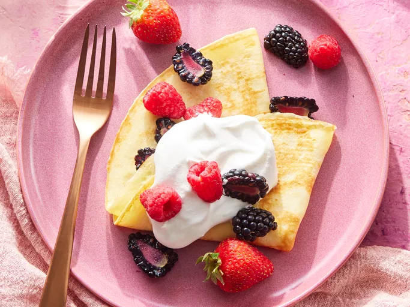

Back to Home
Home
Dessert Crepes Recipes

Description
Treat yourself to a sweet indulgence with our delectable dessert
crepes recipe. These light, delicate crepes are the perfect canvas
for a variety of fillings, from fresh fruits and whipped cream to
rich chocolate or sweet syrups. Whether you’re looking to create a
decadent breakfast or an elegant dessert, our easy-to-follow recipe
will guide you to creating the perfect crepes every time. Get ready
to impress your taste buds and loved ones with this simple, yet
luxurious treat!
ingredients
This 1x recipe (8 servings)
- 4 eggs, lightly beaten
- 1 ⅓ cups milk
- 1 cup all-purpose flour
- 2 tablespoons butter, melted
- 2 tablespoons white sugar
- ½ teaspoon salt
Directions
- Gather all ingredients.
- Whisk together eggs, milk, flour, melted butter, sugar, and salt
in a large bowl until smooth.
- Heat a medium skillet or crepe pan over medium heat. Grease the
pan with a small amount of butter or oil applied with a brush or
paper towel.
- Using a serving spoon or small ladle, spoon about 3 tablespoons
crepe batter onto the hot pan, tilting the pan to evenly coat
the bottom surface.
- Cook until golden brown, 1 to 2 minutes per side.
- Serve warm and enjoy!
Thank you for cooking along with us—now enjoy your delicious,
Serve the dessert crepes warm, garnished with fresh fruit, a drizzle
of chocolate sauce, and a dusting of powdered sugar for a sweet,
indulgent finish.